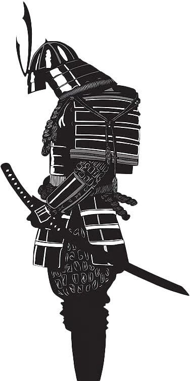

leia-me
Notas de pentest
Writeups de máquinas e laboratórios — HackTheBox, VulnHub e labs autorizados —, do recon ao root, com o mecanismo por trás de cada falha e como corrigi-la. Foco em exploração de aplicações web e escalonamento de privilégio em Linux e Windows.
Tudo em labs próprios e autorizados, com fins de estudo. Os relatórios, o roteiro de estudo, as notas técnicas e os projetos estão no menu ao lado.
contato
Aberto a oportunidades em segurança ofensiva (pentest, AppSec).